This document is a complete technical reference for the ARM32 Linux compressed kernel
boot sequence. It covers every step from the build system producing the zImage
artifact, through the self-decompressing bootstrap loader in head.S, to the final
handoff to stext in the uncompressed vmlinux.
All addresses and register values shown are real values captured from a live GDB session on a QEMU ARM (Cortexa15) machine built with a Yocto Poky toolchain (linux-playground 6.12.56).
|
Reference: How the ARM32 Linux kernel decompresses — Linus Walleij’s article provided the architectural context for this document. Source repository: yocto-playground |
1. Overview
1.1. Why Compressed Kernels?
ARM traditionally ships compressed kernels for two important reasons:
-
Storage savings:
vmlinuxis ~11-12 MB;zImageis ~4-5 MB. That is a saving of over 50%. Flash memory is expensive on embedded SoCs and every byte matters. -
Faster load time: the time the CPU spends decompressing is shorter than the time required to transfer the extra 6-7 MB from slow NAND flash or eMMC.
The trade-off is added complexity: the kernel image must bootstrap a mini-decompressor before any real kernel code runs.
1.2. Complete Boot Flow at a Glance
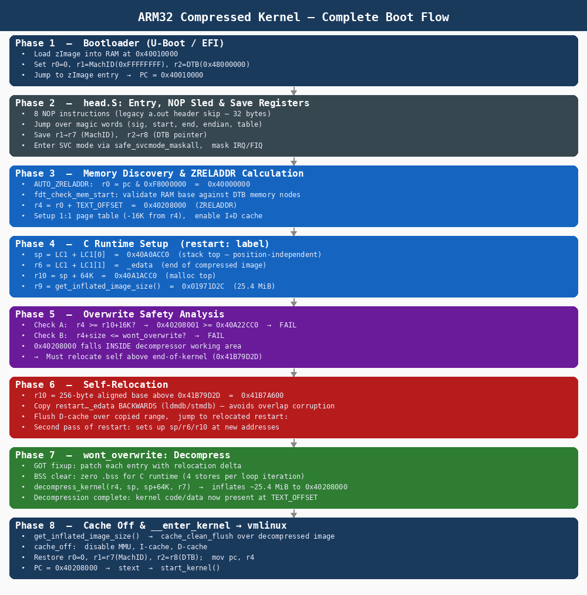
| Phase | Code Location | Key Action |
|---|---|---|
1 |
Bootloader (U-Boot / EFI) |
Load |
2 |
|
NOP sled, save ATAGS, enter SVC mode |
3 |
|
Locate RAM base, compute |
4 |
|
Set up stack ( |
5 |
|
Check A + B both fail → must relocate |
6 |
|
Copy decompressor backwards above kernel destination |
7 |
|
GOT fixup, BSS clear, |
8 |
|
Cache off, restore |
2. zImage Build Pipeline
Before examining runtime behaviour it is essential to understand what the build system
assembles. Running make ARCH=arm zImage triggers the following chain of
transformations.
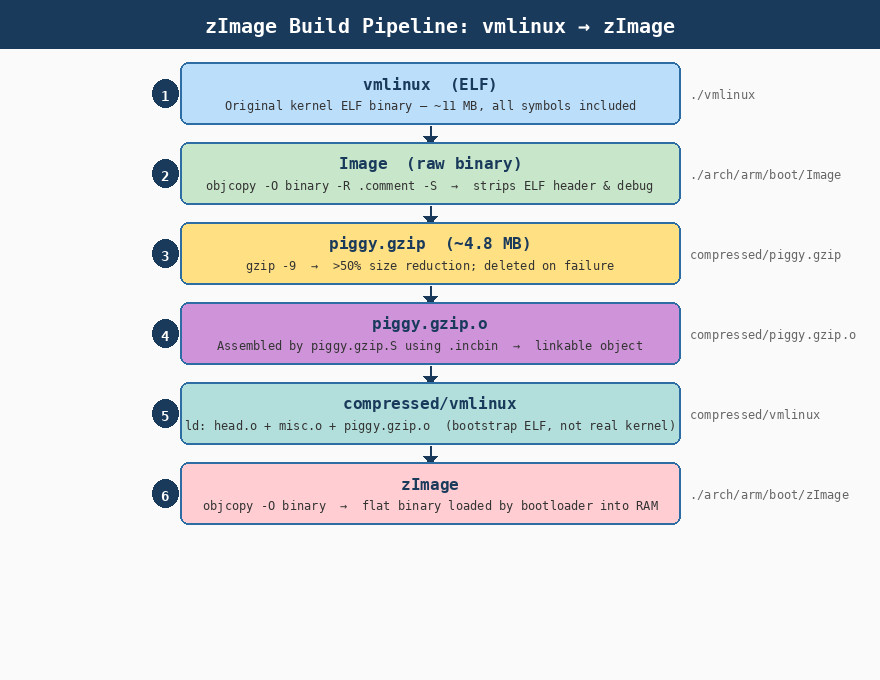
2.1. Build Artefacts
| File | Description | Path |
|---|---|---|
|
Original ELF kernel — all symbols, uncompressed (~11 MB). |
|
|
Symbol→address lookup table used for debugging. |
|
|
Raw binary extracted from |
|
|
ARM assembly startup code — takes control from the bootloader.
Source: |
|
|
|
|
|
Linkable wrapper around |
|
|
C decompression glue — provides |
|
|
Linked ELF: |
|
|
Final |
|
2.2. Step-by-Step Build Commands
2.2.1. Step 1 — Generate Image (raw binary)
objcopy extracts loadable sections and writes a flat binary:
arm-poky-linux-gnueabi-objcopy \
-O binary \ # output format: flat binary
-R .comment \ # remove .comment section
-S \ # strip all debug symbols
vmlinux Image2.2.2. Step 2 — Compress to piggy.gzip
The raw Image is piped through gzip with maximum compression.
If gzip fails the output file is deleted atomically to avoid leaving a corrupt artefact:
(cat Image | gzip -n -f -9 > arch/arm/boot/compressed/piggy.gzip) \
|| (rm -f arch/arm/boot/compressed/piggy.gzip; false)2.2.3. Step 3 — Wrap as piggy.gzip.o
piggy.gzip.S uses the .incbin assembler directive to embed piggy.gzip between
two labels that head.S uses as boundaries at runtime:
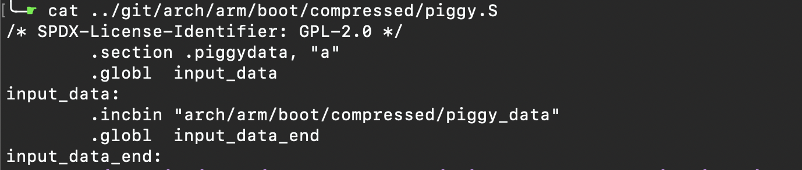
arm-poky-linux-gnueabi-gcc \
-DZIMAGE -c \
-o compressed/piggy.gzip.o \
arch/arm/boot/compressed/piggy.SThe name "piggy" (as in "piggyback") describes its role: carrying the compressed kernel payload on the back of the bootstrap loader.
2.3. zImage Internal Section Layout
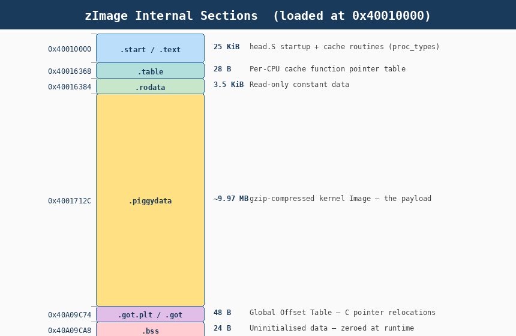
arm-poky-linux-gnueabi-readelf -S arch/arm/boot/compressed/vmlinuxRelevant sections and their runtime addresses (base = 0x40010000):
| Section | Runtime Address | Size | Contents |
|---|---|---|---|
|
|
25 KiB |
|
|
|
28 B |
Per-CPU cache function pointer table (used by |
|
|
3.5 KiB |
Read-only constant data |
|
|
~9.97 MB |
|
|
|
48 B |
Global Offset Table — absolute C pointers, patched after relocation |
|
|
24 B |
Uninitialised variables — zeroed at runtime before calling C code |
|
|
4 KiB |
Decompressor stack (grows downward ↓) |
3. Bootloader Handover
The bootloader (U-Boot, EFI, or the legacy Angel monitor) places zImage into
physical RAM and jumps to its entry point.
Russell King’s
Booting ARM Linux document (2002)
defines the ABI that all ARM bootloaders must follow.
3.1. Bootloader Register ABI
On entry to zImage, the CPU must be in Supervisor (SVC) mode with interrupts,
MMU, and caches disabled.
| Register | Value | Meaning |
|---|---|---|
|
|
Must be zero (reserved for future use) |
|
Machine ID or |
Legacy machine type number. Ignored on Device Tree kernels. |
|
Physical address |
Pointer to ATAGs list or Device Tree Blob (DTB) in physical RAM. |
|
|
CPU jumps here — execution starts at |
3.2. Initial RAM Layout
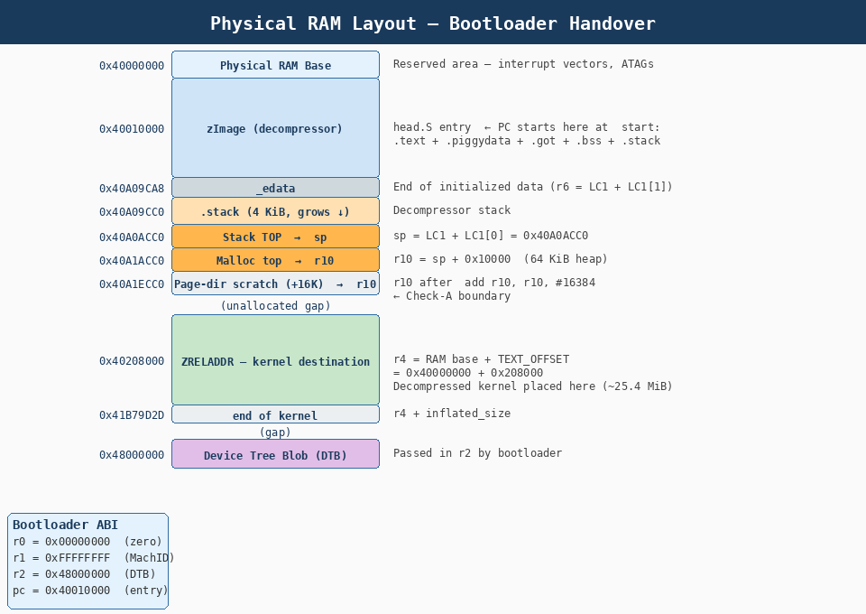
In this QEMU session the key addresses are:
RAM base = 0x40000000 (first 128 MiB-aligned block)
zImage loaded = 0x40010000 (PC starts here)
DTB in r2 = 0x48000000
ZRELADDR (r4) = 0x40208000 (= RAM base + TEXT_OFFSET)3.3. Launching QEMU with GDB
The QEMU session is started with the GDB server enabled so we can trace execution:
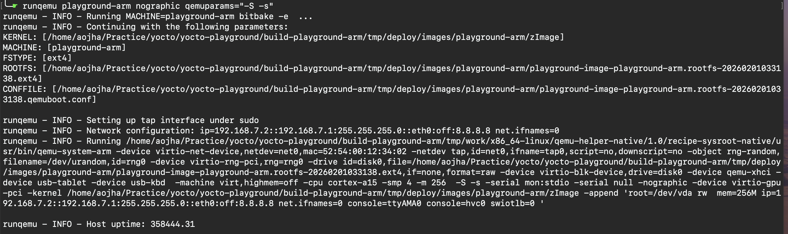
Connect GDB and load the compressed vmlinux symbol file:
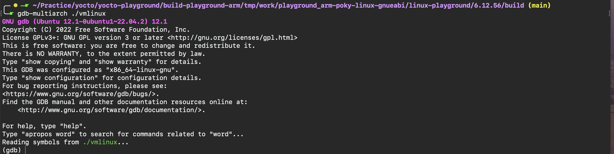
(gdb) target remote :1234
(gdb) add-symbol-file arch/arm/boot/compressed/vmlinux 0x40010000
(gdb) break *0x40010000
(gdb) continueThe memory layout at the bootloader jump point — the first three words at
0x40000010 encode the machine type and kernel entry point:
0x40000010: .word <machine_type or 0>
0x40000014: .word <dtb_phys_addr>
0x40000018: .word <kernel_entry_point>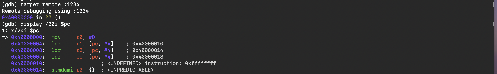
4. head.S Execution — Phase by Phase
arch/arm/boot/compressed/head.S is the heart of the decompressor. It is pure ARM
assembly with no C library, and must be fully position-independent (PIC) because it
runs before the GOT is patched and before it knows exactly where in RAM it was loaded.
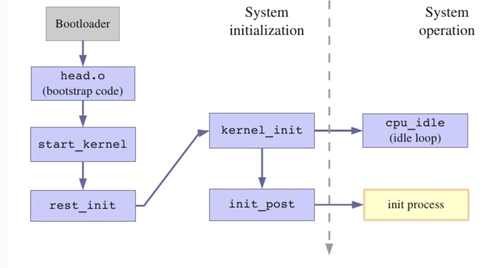
4.1. NOP Sled and Magic Words
Execution begins at the start: symbol. Legacy a.out-format bootloaders jump
32 bytes (8 instructions) into the image to skip a fake a.out header.
The 8 NOPs fill exactly those 32 bytes, preserving compatibility:
start:
__initial_nops @ 3 NOPs (mandatory prefix)
.rept 5
__nop @ 5 more NOPs
.endr
#ifndef CONFIG_THUMB2_KERNEL
__nop @ 1 final NOP (ARM state only)
#endif
W(b) 1f @ jump over magic word table
.word _magic_sig @ 0x016F2818 — zImage identifier
.word _magic_start @ absolute load address
.word _magic_end @ zImage end address
.word 0x04030201 @ endianness flag
.word 0x45454545 @ secondary magic number
.word _magic_table @ additional data table pointer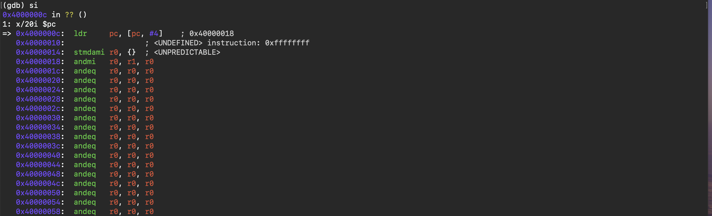
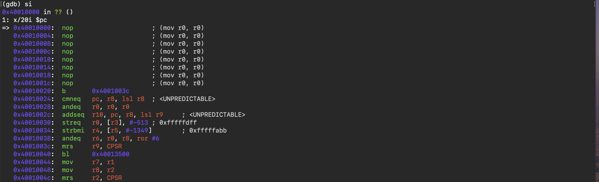
|
The |
4.2. Saving ATAGS / DTB Pointer and Architecture ID
Immediately after jumping over the magic words the code saves the bootloader-provided values before anything can corrupt them:
1:
mrs r9, cpsr @ save current processor mode for later
mov r7, r1 @ save architecture ID (or 0 for DT boots)
mov r8, r2 @ save ATAGs / DTB physical address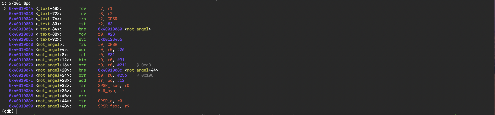
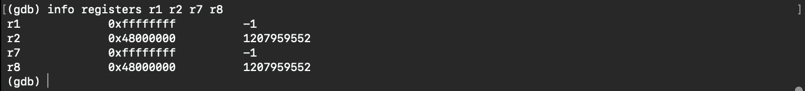
r7 and r8 are preserved throughout the entire decompressor and restored as r1
and r2 in __enter_kernel (see Section 8).
4.3. Entering SVC Mode and Disabling IRQ/FIQ
The safe_svcmode_maskall macro forces the CPU into Supervisor mode and masks all
interrupts. This is required because the decompressor runs with no interrupt vectors
or handlers configured:
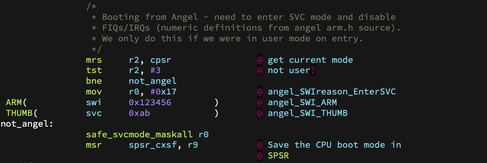
safe_svcmode_maskall r0 @ force SVC mode, mask IRQ and FIQ
msr spsr_cxsf, r9 @ save original boot mode in SPSR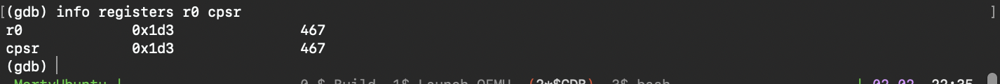
Decoding CPSR = 0x1D3:
0x1d3 = 0000 0000 0000 0000 0000 0001 1101 0011
^^^^^
bits [4:0] = 0x13 → Supervisor (SVC) mode
bit [6] = 1 → FIQ masked
bit [7] = 1 → IRQ masked
bit [5] = 0 → ARM state (not Thumb)
bits[31:28]= 0000 → NZCV condition flags cleared| Field | Bits | Value | Meaning |
|---|---|---|---|
Mode |
[4:0] |
|
Supervisor (SVC) mode |
T |
[5] |
|
ARM state (not Thumb) |
F |
[6] |
|
FIQ masked |
I |
[7] |
|
IRQ masked |
NZCV |
[31:28] |
|
Condition flags cleared |
4.4. Locating Physical Memory Base (AUTO_ZRELADDR)
The decompressor needs to know where physical RAM starts so it can compute the
final kernel load address. On platforms with CONFIG_AUTO_ZRELADDR (the modern
default), it derives this from the program counter using a bitmask:
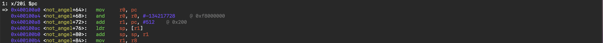
mov r0, pc @ r0 = current PC (inside zImage)
and r0, r0, #0xf8000000 @ mask to 128 MiB-aligned block
@ r0 = physical RAM base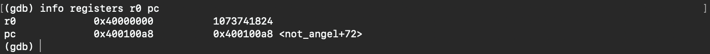
|
Why |
For platforms where physical RAM does not start at a 128 MiB boundary,
fdt_check_mem_start() validates and optionally corrects r0 using the DTB’s
memory nodes:
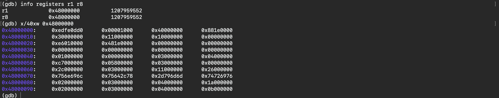
4.5. Computing the Final Kernel Load Address (ZRELADDR)
Once the RAM base is in r0, TEXT_OFFSET is added to produce ZRELADDR — the
address where the decompressed kernel will be written. TEXT_OFFSET is defined in
arch/arm/Makefile:
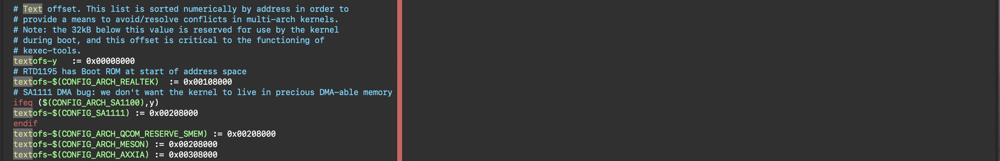
/* Determine final kernel image address */
add r4, r0, #TEXT_OFFSET @ r4 = RAM_BASE + TEXT_OFFSET
@ For this board: 0x40000000 + 0x208000 = 0x40208000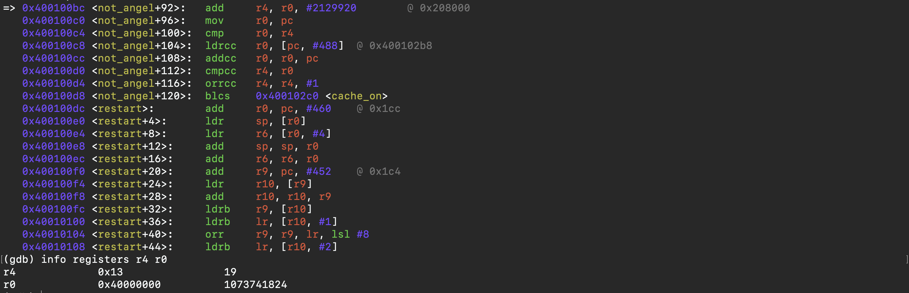
(gdb) info registers r4 r0
r4 = 0x40208000 (1075871744)
r0 = 0x40000000 (1073741824)|
The Most conventional platforms use
|
4.6. Setting Up the Page Table and Enabling Caches
Decompressing ~10 MB in software is slow. Enabling the CPU’s I-cache and D-cache dramatically speeds it up. ARM caches require a page table even for a flat 1:1 virtual=physical mapping:
-
The 16 KiB page table is placed at
r4 - 0x4000(just below ZRELADDR). -
It is only set up if it won’t overwrite the decompressor itself.
-
It covers both the decompressor region and kernel destination with cacheable, bufferable attributes.
mov r0, pc
cmp r0, r4 @ is PC < ZRELADDR?
ldrcc r0, .Lheadroom @ load safety headroom
addcc r0, r0, pc
cmpcc r4, r0 @ will the page table fit safely?
orrcc r4, r4, #1 @ LSB=1 means cache_on was skipped
blcs cache_on @ call cache_on if safecache_on selects the correct cache-enable routine from the proc_types table
by matching the CPU ID register (CP15 c0). This handles all ARM variants from
ARMv4 through ARMv7.
4.7. Setting Up Stack and Malloc Area (restart: label)
The restart: label is the re-entry point used both on first execution and after
self-relocation. It sets up the C runtime prerequisites:
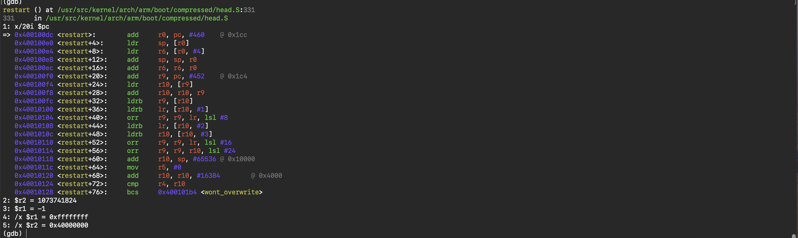
4.7.1. Position-Independent Stack Calculation (LC1)
The decompressor must be fully position-independent — it cannot know where in RAM
it was loaded, so stack and heap addresses cannot be hard-coded. Instead, they are
stored as relative offsets in the LC1 data structure:
adr r1, LC1 @ r1 = runtime address of LC1 label
ldr sp, [r1] @ sp = LC1[0] (relative offset)
ldr r6, [r1, #4] @ r6 = LC1[1] (relative offset)
add sp, sp, r1 @ sp = runtime_LC1 + offset = absolute stack top
add r6, r6, r1 @ r6 = runtime_LC1 + offset = absolute _edata
...
LC1:
.word .L_user_stack_end - LC1 @ LC1[0] = 0x009FAA10
.word _edata - LC1 @ LC1[1] = 0x009F99F8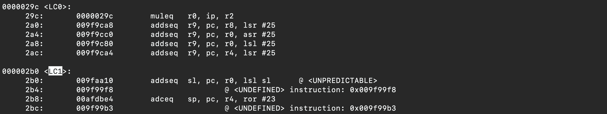
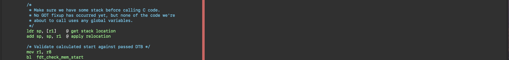
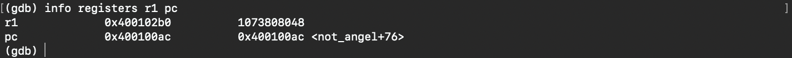
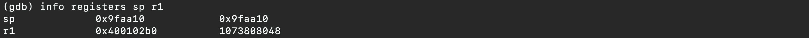
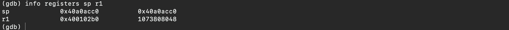
add sp, sp, r14.7.2. Stack Address Calculation Proof
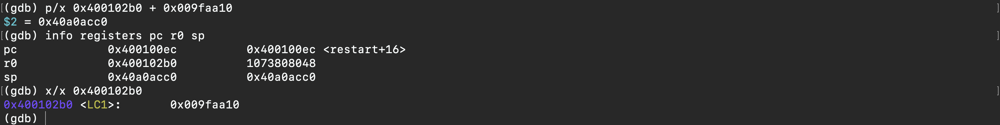
| Symbol | Linked Value | Calculation | Runtime Result |
|---|---|---|---|
|
|
— |
— |
|
— |
|
|
|
|
|
|
|
|
|
|
|
— |
|
|
|
|
— |
— |
|
|
|
|
|
— |
|
|
Section layout confirmation from readelf:
arm-poky-linux-gnueabi-readelf -S arch/arm/boot/compressed/vmlinux[Nr] Name Type Addr Off Size
[ 8] .bss NOBITS 009f9ca8 9faca8 000018
[ 9] .stack NOBITS 009f9cc0 9faca8 001000 ← 4 KiB
.stack Addr = 0x009F9CC0
.stack Size = 0x1000
.L_user_stack_end = 0x009F9CC0 + 0x1000 = 0x009FACC0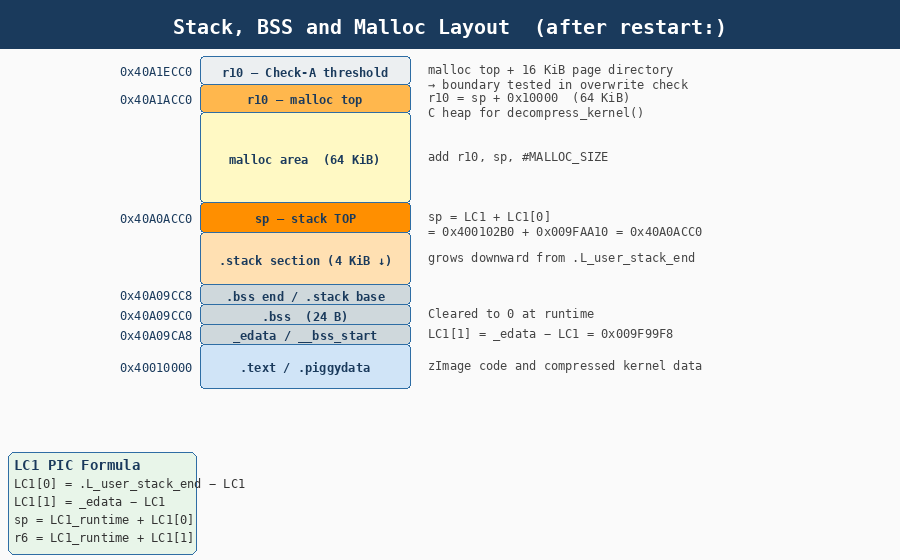
4.7.3. Malloc Area
A fixed 64 KiB block immediately above the stack top is reserved for the C
decompressor (misc.c) heap:
/* malloc space is above the relocated stack (64k max) */
add r10, sp, #MALLOC_SIZE @ r10 = sp + 0x10000 (malloc top)
@ r10 = 0x40A0ACC0 + 0x10000 = 0x40A1ACC0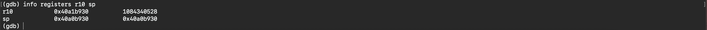
(gdb) info registers r10 sp
r10 = 0x40A1ACC0 (1084337344)
sp = 0x40A0ACC0 (1084272832)5. Overwrite Safety Analysis
The most subtle part of the decompressor is the check that determines whether it is safe to decompress in place, or whether the decompressor must first move itself to a higher address before inflating the payload.
5.1. The Problem
The decompressor will inflate ~25.4 MiB starting at ZRELADDR (0x40208000).
But the decompressor itself is executing from 0x40010000 to 0x40A1ECC0 — a range
of ~9.5 MiB. Crucially, 0x40208000 falls inside that range:
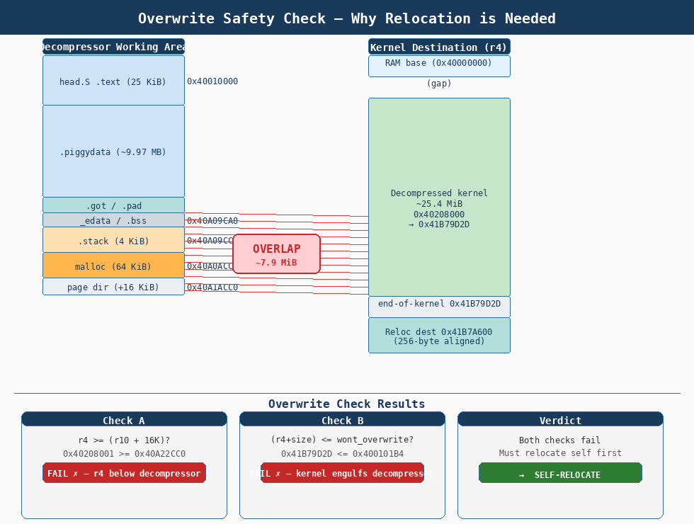
5.2. Check A — Is the Kernel Destination Above the Decompressor?
This check asks: will the decompressed kernel be placed completely above the decompressor’s working area (code + stack + malloc + page directory)?
add r10, r10, #16384 @ r10 += 16 KiB (page directory size)
cmp r4, r10 @ is r4 (ZRELADDR) >= r10?
bhs wont_overwrite @ PASS → safe to decompress in place
@ (falls through on FAIL → proceed to Check B)| Variable | Value | Meaning |
|---|---|---|
|
|
ZRELADDR (LSB=1 is the Thumb interwork bit — effective address = |
|
|
Malloc top |
|
|
End of decompressor working area (page-dir added) |
|
|
Threshold that |
Result |
FAIL |
|
5.3. Check B — Does the Decompressed Kernel Fit Below the Decompressor?
This check asks: does the decompressed kernel end before it reaches the decompressor code? (i.e. does the entire kernel fit in the gap below where we are running?)
add r10, r4, r9 @ r10 = r4 + inflated_size = end-of-kernel
adr r9, wont_overwrite @ r9 = runtime addr of wont_overwrite label
cmp r10, r9 @ is end-of-kernel <= wont_overwrite?
bls wont_overwrite @ PASS → safe to decompress in place
@ (falls through on FAIL → must relocate)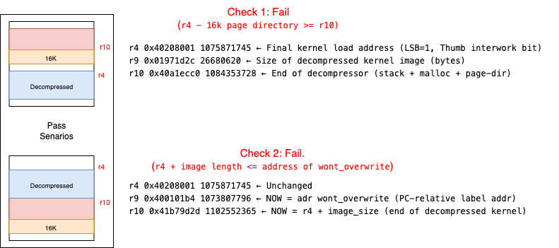
|
Between the two GDB snapshots shown above, the code executed
|
| Variable | Value | Meaning |
|---|---|---|
|
|
ZRELADDR |
|
|
26,680,620 bytes = 25.4 MiB inflated kernel size |
|
|
End address of decompressed kernel |
|
|
Address of the safe-exit label (only |
Result |
FAIL |
|
5.4. Overlap Extent Summary
| Region | Start | End |
|---|---|---|
Decompressor working area |
|
|
Decompressed kernel destination |
|
|
Overlap zone |
|
|
|
Verdict: The decompressor is entirely inside the kernel’s destination range. Decompressing without relocation would corrupt the running decompressor code, stack, malloc heap, and page-directory scratch space — causing an immediate crash. |
5.5. Decision Flowchart
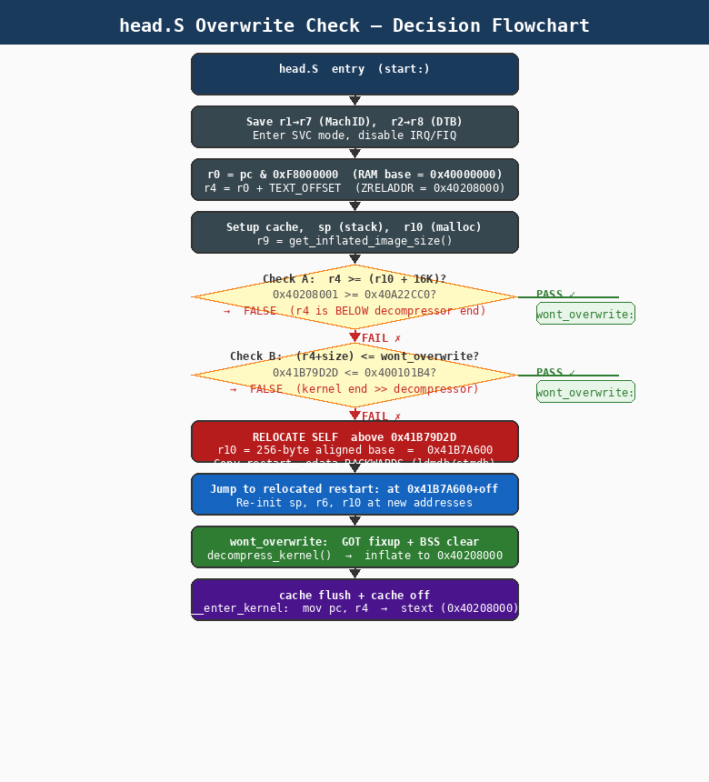
5.6. Complete Address Reference Table
| Symbol / Region | Address | Source | Notes |
|---|---|---|---|
Physical RAM base |
|
Hardware |
SoC memory start |
Decompressor base |
|
Bootloader |
zImage loaded and executing here |
|
|
GDB |
Only |
|
|
Computed |
LSB=1 Thumb bit; effective = |
Stack TOP ( |
|
|
|
Malloc top ( |
|
|
C heap for |
Decompressor end ( |
|
GDB |
Malloc top + 16 KiB page directory |
Check A threshold |
|
Derived |
|
Inflated image size ( |
|
GDB |
26,680,620 bytes = ~25.4 MiB |
End of decompressed kernel |
|
|
|
Relocation destination |
|
Derived |
256-byte aligned above |
DTB ( |
|
Bootloader |
Passed in |
6. Self-Relocation
Since both overwrite checks failed, the decompressor must move itself to a safe
location above 0x41B79D2D before inflating the payload.
6.1. Computing the Relocation Destination
The destination must be above the kernel end, with enough clearance that the relocation trampoline (the copy loop itself) doesn’t overwrite itself mid-copy:
/* r10 = end-of-kernel = 0x41B79D2D */
add r10, r10, #((reloc_code_end - restart + 256) & ~255)
bic r10, r10, #255
/* r10 = 256-byte aligned base above end-of-kernel */
/* GDB confirms: r10 = 0x41B7A600 */
adr r5, restart
bic r5, r5, #31 @ align source start down to 32 bytes
/* r5 = source start ≈ 0x40010000 */(gdb) info registers r6 r10
r6 = 0x40A09CA8 <<< _edata (source end)
r10 = 0x41B7A600 <<< relocation destination base6.2. Why Copy Backwards?
1: ldmdb r6!, {r0 - r3, r10 - r12, lr} @ load 8 words from source, decrement r6
cmp r6, r5 @ reached source start?
stmdb r9!, {r0 - r3, r10 - r12, lr} @ store 8 words to dest, decrement r9
bhi 1b @ loop until done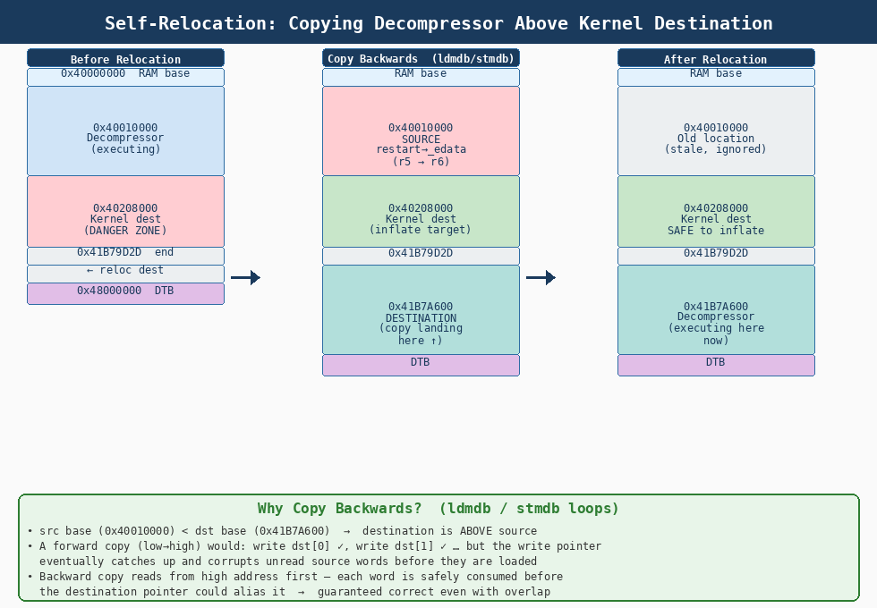
|
Since destination base ( The backward copy ( |
6.3. Jumping to Relocated Code
After the copy the decompressor flushes the D-cache and branches to the relocated
restart: entry:
mov r0, r9 @ start of relocated zImage
add r1, sp, r6 @ end of relocated zImage
bl cache_clean_flush @ flush D-cache over copied range
badr r0, restart @ PC-relative address of restart:
add r0, r0, r6 @ apply relocation delta
mov pc, r0 @ JUMP to relocated restart: at 0x41B7A600+offset|
The relocated |
7. wont_overwrite: — GOT Fixup, BSS Clear, and Decompression
All paths converge at wont_overwrite: — whether the decompressor relocated
itself or arrived here directly. The C runtime must be prepared before calling
decompress_kernel().
7.1. Checking the Relocation Delta
wont_overwrite:
adr r0, LC0
ldmia r0, {r1, r2, r3, r11, r12}
sub r0, r0, r1 @ delta = runtime_LC0 - linked_LC0
@ if delta == 0: we are at the linked address (no relocation needed)
orrs r1, r0, r5 @ r5 = appended DTB size (0 if absent)
beq not_relocated @ skip GOT fixup if both zero7.2. GOT Fixup
The Global Offset Table (GOT) contains absolute pointers to global variables in
misc.c. After relocation these are stale — they point to the old location.
Each entry is patched with the relocation delta:
add r11, r11, r0 @ GOT start += delta
add r12, r12, r0 @ GOT end += delta
add r2, r2, r0 @ BSS start += delta
add r3, r3, r0 @ BSS end += delta
1: ldr r1, [r11, #0] @ load GOT entry (absolute pointer)
add r1, r1, r0 @ add relocation delta
cmp r1, r2 @ if entry >= BSS start ...
cmphs r3, r1 @ ... and BSS end > entry ...
addhi r1, r1, r5 @ ... also add appended DTB size (BSS bump)
str r1, [r11], #4 @ store patched entry, advance
cmp r11, r12
blo 1b @ loop until all GOT entries patched7.3. BSS Clear
All uninitialized global variables in misc.c live in .bss.
The C standard requires them to be zero on entry:
not_relocated:
mov r0, #0
1: str r0, [r2], #4 @ clear word, advance pointer
str r0, [r2], #4 @ (unrolled 4 stores per iteration)
str r0, [r2], #4
str r0, [r2], #4
cmp r2, r3 @ reached end of BSS?
blo 1b7.4. Calling decompress_kernel()
With the C runtime ready, execution calls into misc.c:
mov r0, r4 @ r0 = ZRELADDR (output start = 0x40208000)
mov r1, sp @ r1 = malloc base (stack top)
add r2, sp, #MALLOC_SIZE @ r2 = malloc end (+ 64 KiB)
mov r3, r7 @ r3 = architecture ID
bl decompress_kernel @ call into misc.c
The call chain inside misc.c:
-
decompress_kernel(output, heap_base, heap_end, arch_id, delta) -
→
do_decompress(input_data, input_len, output, error) -
→
__decompress(input, in_len, NULL, NULL, output, 0, NULL, error) -
→ Format-specific decompressor from
lib/decompress_*.c(gzip, lzma, xz, lzo, lz4 — whichever was selected in Kconfig)
|
Enable This is the cheapest possible smoke-test that |
After decompression, ~25.4 MiB of uncompressed kernel code and data is now at
0x40208000.

8. Cache Flush, Cache Off, and __enter_kernel
8.1. Flush and Turn Off Caches
The decompressor flushes the D-cache over the newly-written kernel image (to make it coherent for instruction fetch), then disables the MMU and caches as required by the ARM booting ABI:
get_inflated_image_size r1, r2, r3 @ r1 = end address of inflated kernel
mov r0, r4 @ r0 = start = ZRELADDR
bl cache_clean_flush @ flush D-cache over entire kernel image
bl cache_off @ disable MMU, I-cache, D-cachecache_off selects the correct disable sequence from proc_types based on the
CPU ID, invalidates TLBs where applicable, and issues DSB/ISB barriers.
8.2. __enter_kernel — Final Register Restore and Jump
__enter_kernel:
mov r0, #0 @ r0 must be 0 (ARM boot ABI)
mov r1, r7 @ restore MachID (saved at entry in Phase 2)
mov r2, r8 @ restore DTB pointer (saved at entry in Phase 2)
mov pc, r4 @ jump to stext at ZRELADDR = 0x40208000|
At the moment |
8.3. Final Memory State at stext
| Register | Value | Meaning for vmlinux |
|---|---|---|
|
|
Must be zero — ARM boot ABI requirement |
|
|
Machine ID (ignored by DT kernels, passed through for legacy) |
|
|
DTB physical address — parsed by |
|
|
|
8.4. What Happens in vmlinux (stext)
The uncompressed kernel’s arch/arm/kernel/head.S takes over:
-
Enable the MMU and set up initial page tables at
ZRELADDR - 0x4000. -
Call
__mmap_switched: copy.datafrom ROM if needed, clear BSS, set up stack. -
Call
start_kernel()ininit/main.c— printk, scheduler, drivers, filesystems.
|
The appended DTB ( |
8.5. vmlinux Symbols in GDB
To continue tracing into the real kernel, load the uncompressed vmlinux symbols
at TEXT_OFFSET:
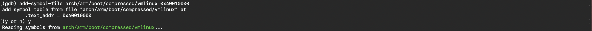
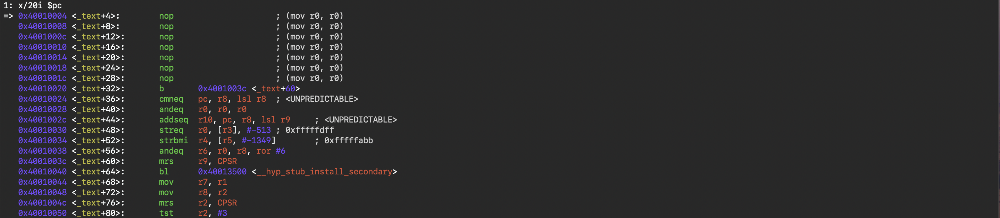
(gdb) add-symbol-file vmlinux 0x40208000
(gdb) break start_kernel
(gdb) continue9. Debugging Techniques
9.1. QEMU + GDB Setup
The most effective way to trace the decompressor is QEMU + GDB with the compressed vmlinux symbol file:
# Terminal 1: Start QEMU with GDB stub
qemu-system-arm \
-M versatilepb \
-kernel arch/arm/boot/zImage \
-dtb board.dtb \
-S \ # freeze CPU at startup
-s # GDB server on :1234
# Terminal 2: Connect GDB
arm-poky-linux-gnueabi-gdb
(gdb) target remote :1234
(gdb) add-symbol-file arch/arm/boot/compressed/vmlinux 0x40010000
(gdb) break *0x40010000
(gdb) continue
# Once inside the decompressor — load kernel symbols too
(gdb) add-symbol-file vmlinux 0x402080009.2. CONFIG_DEBUG_UNCOMPRESS
Enables a simple progress message via the UART.
Requires CONFIG_DEBUG_LL and a correct DEBUG_UART_PHYS:
CONFIG_DEBUG_LL=y
CONFIG_DEBUG_UNCOMPRESS=yOutput on UART:
Uncompressing Linux... done, booting the kernel.9.3. Enabling -DDEBUG in head.S
For deeper tracing, enable the DEBUG define to activate dbgkc and dbgadtb
macros which print relocation and DTB addresses over the UART:
# In arch/arm/boot/compressed/Makefile:
AFLAGS_head.o += -DTEXT_OFFSET=$(TEXT_OFFSET) -DDEBUGExample UART output when relocation occurs:
C:0x403080C0-0x40DF0CC0->0x41801D00-0x422EA900Reading the output: C:src_start-src_end→dst_start-dst_end — the compressed
kernel was copied from 0x40308000 to 0x41801D00 before decompression.
If CONFIG_ARM_APPENDED_DTB is also set, the dbgadtb macro prints:
DTB:0x40DEBA68 (0x00004200)Format: DTB:start_address (size).
9.4. Useful GDB Commands
| Command | What It Reveals |
|---|---|
|
Full register dump at any point |
|
Dump first 16 words of zImage (NOP sled + magic) |
|
Inspect DTB header — first word should be |
|
Read |
|
Single-step ARM instructions |
|
Stop at the safe decompression entry point |
|
Stop just before the C decompressor runs |
|
Stop at the final kernel handoff |
|
Disassemble |
|
Resolve an address to a symbol name |
10. Summary: Complete Boot Phase Reference
| Phase | Code Location | Action | Key Registers / Addresses |
|---|---|---|---|
1. Bootloader |
U-Boot / EFI |
Load |
|
2. NOP sled |
|
8 NOPs for legacy |
|
3. Save ATAGS |
|
|
|
4. SVC mode |
|
Force SVC, mask IRQ/FIQ, save CPSR to SPSR |
|
5. Find RAM base |
|
|
|
6. Compute ZRELADDR |
|
|
|
7. Cache on |
|
1:1 page table at |
|
8. Stack + malloc |
|
|
|
9. DTB check |
|
Look for |
|
10. Overwrite checks A+B |
|
Both fail — kernel destination overlaps decompressor |
|
11. Self-relocate |
|
Copy |
|
12. GOT + BSS |
|
Patch GOT entries with delta; zero |
|
13. Decompress |
|
Inflate |
|
14. Cache flush + off |
|
Flush D-cache over kernel image; disable MMU/caches |
— |
15. Enter kernel |
|
Restore |
|
16. vmlinux startup |
|
Enable MMU, set up page tables, → |
— |